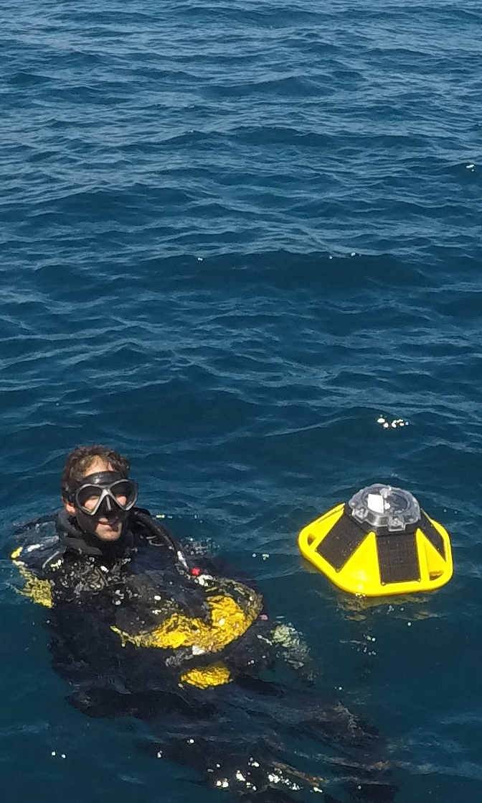
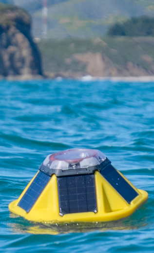

Latest News

Backyard Buoys deploys its first buoy, in WA!
Backyard Buoys makes a splash! Our first buoy was deployed by the Quileute Tribe ...
Last updated 3 mins ago

Backyard Buoys 2022 Phase 2 announcement
Backyard Buoys empowers Indigenous and other coastal communities in the Pacific Northwest, Alaska, and ...
Mon Aug 2, 2022

Sofar Ocean announcement
Backyard Buoys, a community-led ocean observing project that empowers Indigenous partners ...
Wed Sept 10, 2021